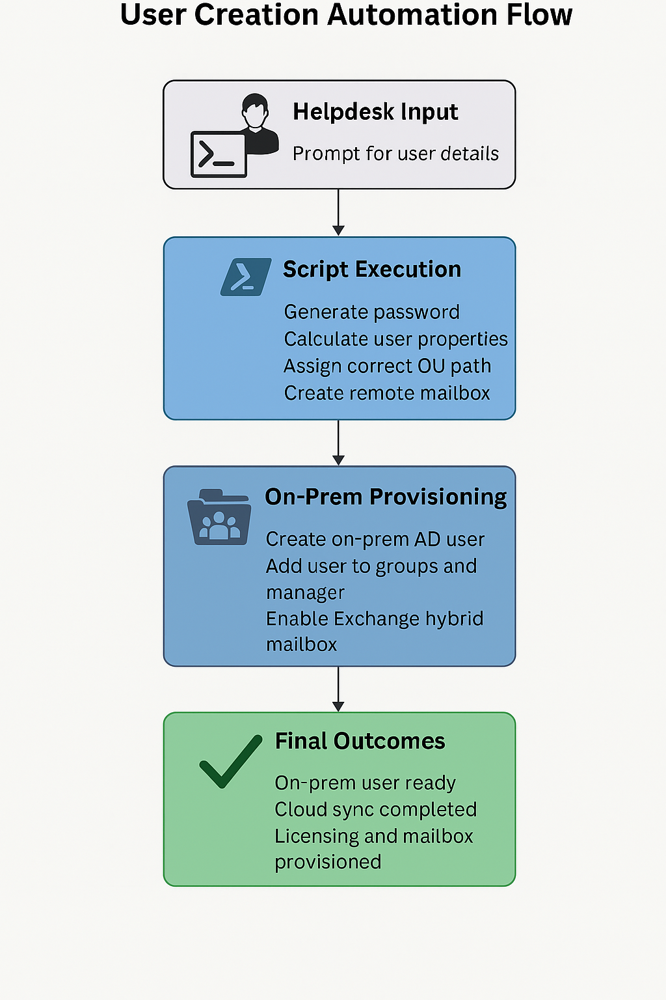

Challenge
Helpdesk technicians were spending 30+ minutes manually creating new users, assigning groups, and provisioning mailboxes. The process was error-prone and inconsistent across departments.
Tools & Technologies
- PowerShell
- Active Directory (on-prem)
- Exchange (on-prem + cloud)
- Group-based licensing
- OU and attribute-based provisioning
Implementation
This script prompts helpdesk techs for basic user details, copies group memberships from a reference user, assigns attributes, provisions mailboxes, and applies licensing—all in one run.
Script Preview
* All company-specific data has been stripped from this script. Some logic may not run properly due to missing domain, OU, and group definitions.
Write-Host "Welcome to the user creation Script"
$username = Read-Host "Please enter User Name"
$firstname = Read-Host "Please enter First Name"
$lastname = Read-Host "Please enter Last Name"
$refuser = Read-Host "Please enter the username to copy group membership from"
$domain = Read-Host "Please enter primary user Domain name for email"
# Domain validation logic
if ($domain -eq "") {
Write-Host "You Entered: $domain"
} elseif ($domain -eq "") {
Write-Host "You Entered: $domain"
} elseif ($domain -eq "") {
Write-Host "You Entered: $domain"
} else {
Write-Host "Invalid domain. Relaunch to try again"
exit
}
$emailname = $firstname + "." + $lastname
$upn = $username + ""
$displayname = $firstname + " " + $lastname
# User creation logic
New-ADUser -Name $displayname -SamAccountName $username -UserPrincipalName $upn -Enabled $true
Start-Sleep -Seconds 30
# Group copy and description
Get-ADUser -Identity $refuser -Properties memberof | Select-Object -ExpandProperty memberof | Where-Object { $_ -notmatch '^M\d' } | Add-ADGroupMember -Members $username
$userdesC = Get-ADUser -Identity $refuser -Properties Description | Select-Object -ExpandProperty Description
Set-ADUser -Identity $username -Description $userdesC
# Proxy addresses
set-aduser -identity $username -add @{proxyAddresses="smtp:$emailname@"}
set-aduser -identity $username -add @{proxyAddresses="SMTP:$emailname@"}
# Mailbox and licensing
Add-PSSnapin *RecipientManagement
enable-remotemailbox -identity $username -remoteroutingaddress "$username@.mail.onmicrosoft.com"
Add-ADGroupMember -Identity "M365 - E3 Full License" -Members $username
Add-ADGroupMember -Identity "M365-EnableMFA" -Members $username
Architecture Diagram
Impact
- Saved ~30 minutes per user onboarding
- Eliminated manual errors and skipped steps
- Improved consistency across departments
- Enabled scalable, role-based provisioning
Relevant Certification
This project aligns with SC-200: Microsoft Security Operations Analyst and SC-300: Identity and Access Administrator, demonstrating automation and governance in hybrid environments.